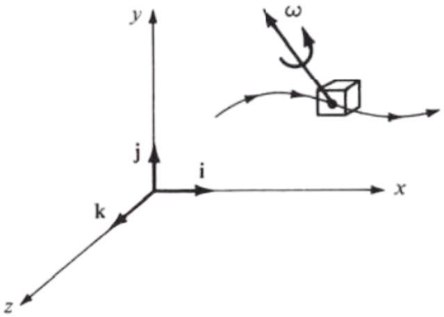

The fluid element is generally moving in three-dimensional space, and its angular velocity is a vector \( \boldsymbol{\omega} \) that is oriented in some general direction

The resulting angular velocity of the fluid element in three-dimensional space is
\[
\boldsymbol{\omega} = \omega_x \mathbf{i} + \omega_y \mathbf{j} + \omega_z \mathbf{k}
\]
\[\boxed{
\boldsymbol{\omega} = \frac{1}{2} \left[
\left( \frac{\partial w}{\partial y} - \frac{\partial v}{\partial z} \right) \mathbf{i}
+ \left( \frac{\partial u}{\partial z} - \frac{\partial w}{\partial x} \right) \mathbf{j}
+ \left( \frac{\partial v}{\partial x} - \frac{\partial u}{\partial y} \right) \mathbf{k}
\right]}
\]
It expresses the angular velocity of the fluid element in terms of derivatives of the velocity field
Denote vorticity by the vector \( \boldsymbol{\xi} \):
\[
\boldsymbol{\xi} \equiv 2 \boldsymbol{\omega}
\]
\[
\boldsymbol{\xi} =
\left( \frac{\partial w}{\partial y} - \frac{\partial v}{\partial z} \right) \mathbf{i}
+ \left( \frac{\partial u}{\partial z} - \frac{\partial w}{\partial x} \right) \mathbf{j}
+ \left( \frac{\partial v}{\partial x} - \frac{\partial u}{\partial y} \right) \mathbf{k}
\]
Recall \(\boxed{\nabla \times \mathbf{u} =
\begin{vmatrix}
\mathbf{i} & \mathbf{j} & \mathbf{k} \\
\frac{\partial}{\partial x} & \frac{\partial}{\partial y} & \frac{\partial}{\partial z} \\
u_x & u_y & u_z
\end{vmatrix}
= \mathbf{i} \left( \frac{\partial u_z}{\partial y} - \frac{\partial u_y}{\partial z} \right)
+ \mathbf{j} \left( \frac{\partial u_x}{\partial z} - \frac{\partial u_z}{\partial x} \right)
+ \mathbf{k} \left( \frac{\partial u_y}{\partial x} - \frac{\partial u_x}{\partial y} \right)}\) for \( \nabla \times \mathbf{u} \) in Cartesian coordinates. Since \( u \), \( v \), and \( w \) denote the \( x \)-, \( y \)-, and \( z \)-components of velocity
\[
\boldsymbol{\xi} = \nabla \times \mathbf{u}
\]